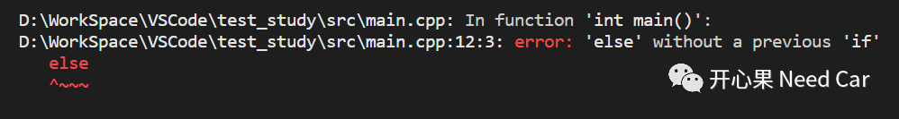

开心果 Need Car · 2023-01-27T15:46:00+08:00 · 微信原文
工程开发中，尤其阅读代码时，有时会碰到一些让我们内心"嗯哼"一下的代码。比如：
#define Call_Mcal_DmaMux_Init(u32ptr) \do \{ \Mcal_Trusted_Call1param(Mcl_DmaMux_Init,(u32ptr)); \} \while(0)
如上的宏定义，是否能理解？本文，我们就聊聊宏定义与do{...}while(0)的结合。
1、宏的使用
开发中，宏的使用很频繁。为了精简代码的编写过程，有时，我们会将多条语句用一个宏表示。
示例 1：
#define PBUF_POOL_FREE_OOSEQ_QUEUE_CALL() do { \if (tcpip_try_callback(pbuf_free_ooseq_callback, NULL) != ERR_OK) { \SYS_ARCH_PROTECT(old_level); \pbuf_free_ooseq_pending = 0; \SYS_ARCH_UNPROTECT(old_level); \} } while(0)
示例 2：
if (IP_IS_ANY_TYPE_VAL(*ipaddr) || IP_IS_V6_VAL(*ipaddr)) { \IP6ADDR_PORT_TO_SOCKADDR((struct sockaddr_in6*)(void*)(sockaddr), ip_2_ip6(ipaddr), port); \} else { \IP4ADDR_PORT_TO_SOCKADDR((struct sockaddr_in*)(void*)(sockaddr), ip_2_ip4(ipaddr), port); \} } while(0)
示例：定义宏Get_OptResult(a, b, c, d)精简代码c = ((a) + (b));和d = ((a) * (b));，如下所示：
c = ((a) + (b)); \d = ((a) * (b));int main(void){int JudgeFlag = 0;int cResult, dResult;if(JudgeFlag == 0)Get_OptResult(60, 20, cResult, dResult);else{cResult = 100;dResult = 1000;}printf("cResult = %ld, dResult = %ld.\n", cResult,dResult );getchar();}
如上代码有什么问题呢？宏展开以后，如下所示：
c = ((a) + (b)); \d = ((a) * (b));int main(void){int JudgeFlag = 0;int cResult, dResult;if(JudgeFlag == 0)c = ((a) + (b));d = ((a) * (b));;else{cResult = 100;dResult = 1000;}printf("cResult = %ld, dResult = %ld.\n", cResult,dResult );getchar();}

c = ((a) + (b)); \d = ((a) * (b)); \}while(0)int main(void){int JudgeFlag = 0;int cResult, dResult;if(JudgeFlag == 0)Get_OptResult(60, 20, cResult, dResult);else{cResult = 100;dResult = 1000;}printf("cResult = %ld, dResult = %ld.\n", cResult,dResult );getchar();}
c = ((a) + (b)); \d = ((a) * (b)); \}while(0)int main(void){int JudgeFlag = 0;int cResult, dResult;if(JudgeFlag == 0)do{c = ((a) + (b));d = ((a) * (b));}while(0);else{cResult = 100;dResult = 1000;}printf("cResult = %ld, dResult = %ld.\n", cResult,dResult );getchar();}
如上，使用do{...}while(0)结构，宏展开以后，吸收了分号";"带来的影响，进而确保else语句可以被执行到。
往期精彩回顾